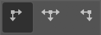
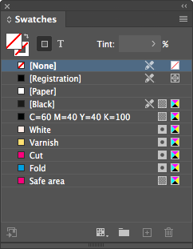

Colecție de scripturi InDesign pentru operații simple și repetitive. O bună parte dintre ele sunt gândite să fie rulate printr‑un shortcut (o sugestie de configurare găsiți în secțiunea Shortcuts). Câteva pot fi rulate în scriptul batch_convert.jsx de Peter Kahrel.
AlignTo... aliniază obiectul selectat la referința definită de opțiunea Align To. ToggleAlignTo.jsx schimbă alinierea la obiect, margini, pagină sau spread (rulați scriptul în mod repetat). ResetAlignTo.jsx o resetează la Align to Selection.
SetRefPoint... schimbă punctul de referință pentru transformări, similar cu selectarea pătrățelelor proxy în paleta Transform.
Notă: Ambele seturi sunt gândite să fie alocate tastaturii numerice (v. Shortcuts).
Pentru a manipula unele obiecte poate fi uneori util să le inserăm temporar într‑un container (clipping frame).
Clip.jsx inserează obiectele selectate într-un clipping frame sau le restaurează dacă sunt deja inserate.
ClipUndo.jsx restaurează unul sau mai multe obiecte simultan.
FitToPage... redimensionează unul sau mai multe obiecte selectate, fără să le scaleze: dacă obiectul este mai mare decât pagina/marginile/bleed‑ul, va fi redus; dacă este mai mic dar intră într-o zonă „snap”, va fi mărit. Frame‑urile obișnuite sunt redimensionate pur și simplu. Pentru a nu le deforma, obiectele rotite, ovalurile, grupurile etc sunt incluse într‑un clipping frame și acesta e redimensionat. FitToSpread... fac același lucru pentru paginile grupate într‑un spread.
FitTo...Forced.jsx redimensionează exact la dimensiunile respective.
Notă: FitTo.jsx nu e gândit a fi rulat direct, ci e apelat intern de celelalte scripturi din serie.
Acestea lucrează, de asemenea, cu unul sau mai multe obiecte, dar le scalează proporțional, ca un bloc unitar.
ScaleToPageSize.jsx și ScaleToPageMargins.jsx scalează la dimensiunile paginii sau marginii.
Variantele H (height) și W (width) scalează la înălțimea, respectiv lățimea paginii sau marginii.
PageSizeFromFilename.jsx redimensionează paginile documentului în funcție de numele fișierului:
| Fișier | Dimensiune | Safe area | Bleed |
|---|---|---|---|
Filename1_1400x400_700x137_10mm_QR.indd |
1400x400 | 700x137 | 10 |
Filename2_597x517_577x500.5_3mm V4_QR.indd
|
597x517 | 577x500.5 | 3 |
Detalii
Caută în numele fișierului perechi de numere de genul „000x000” (unde „000” înseamnă un grup de cel puțin o cifră, urmată sau nu de zecimale, și opțional de „mm” sau „cm”). Dacă găsește doar o pereche, aceasta va fi dimensiunea paginii. Dacă găsește două (de ex. „000x000_000x000”), perechea mai mare va fi dimensiunea paginii, iar perechea mai mică dimensiunea ariei vizibile. Dacă sunt urmate de o secvență de una sau două cifre, aceasta e considerată bleed.
PageSizeFromMargins.jsx redimensionează fiecare pagină la marginile acesteia.
PageSizeFromSelection.jsx redimensionează pagina curentă la obiectele selectate (similar cu Artboards > Fit to Selected Art din Illustrator).
PageMarginsFromSelection.jsx setează marginile paginii la dimensiunile selecției.
„Strânge” chenarul la text și îi setează dimensionarea automată. Controlați referința pentru dimensionarea automată setând Paragraph Alignment pentru axa orizontală și Text Frame Options > Vertical Justification pentru axa verticală:
 |
 |
 |
|
|---|---|---|---|
 |
 |  |
 |
 |
 |
 |
 |
 |
 |
 |
Dacă textul are un singur rând, Auto-Sizing Type va fi setat Height and width. Dacă are mai multe rânduri, prima rulare îl va seta Height only, a doua Height and width.
Înlocuiește fonturi pe baza unei liste de substituție. Lista este un fișier TSV (tab-separated values) cu 4 coloane, cu același nume ca scriptul (CleanupFonts.txt). Prima linie (capul de tabel) și liniile care încep cu „;" sunt ignorate.
Puteți utiliza ShowFonts.jsx pentru a obține o listă a fonturilor pentru copy-paste în CleanupFonts.txt.
Uneori se refolosesc obiecte care au o etichetă atașată (Script Label), și asta poate crea probleme ulterior. CleanupLabels.jsx șterge toate etichetele din document (dacă nu e selectat nimic) sau doar din elementele selectate.
Convertește swatch‑urile RGB la CMYK, elimină duplicatele, le redenumește după formula „C= M= Y= K=” și le șterge pe cele nefolosite. Culorile spot rămân neschimbate.
DocCleanup.jsx șterge culorile, layerele și paginile neutilizate, deblochează toate elementele, le resetează scalarea la 100%.
DocDefaults.jsx creează câteva culori speciale și layere, înlocuiește niște fonturi (rulează CleanupFonts.jsx), stabilește dimensiunea paginii și marginile (rulează PageSizeFromFilename.jsx).
 
De asemenea, scriptul combină câteva layere:
| Layer | Combinat cu |
|---|---|
| rahmen, vis. area, visible, visible area, vizibil | safe area |
| cut, cut lines, decoupe, die, die cut, diecut, stanz, stanze, stanzform | dielines |
| uv, varnish | varnish |
| info copy, ratio | info |
| hw logo, logo hw, wh, whw | HW |
| copy, text, textes, txt, type | text and logos |
| tins | products |
| artwork, aw, elemente, layout, layouts | artwork |
| background, bg, hg, hintergrund | bg |
Ambele scripturi schimbă niște setări după preferințele mele.
Detalii
Rulers: Reset Zero Point
Rulers Units: Millimeters
View: Show Rulers
View: Show Frame Edges
Document Intent: Print
Transparency Blend Space: CMYK
CMYK Profile: ISO Coated v2 (ECI)
RGB Profile: sRGB IEC61966-2.1
Grids & Guides: Show Guides
Grids & Guides: Unlock Guides
Guides & Pasteboard: Margins: H 150 mm, V 25 mm
Guides & Pasteboard: Preview Background: Light Gray
Keyboard Increments: Cursor Key: 0.2 mm
Keyboard Increments: Size/Leading: 0.5 pt
Keyboard Increments: Baseline Shift: 0.1 pt
Keyboard Increments: Kerning/Tracking: 5/1000 em
Pages: Allow Document Pages to Shuffle
Layers: Ungroup Remembers Layers
Layers: Paste Remembers Layers
Transform Reference Point: Center
Type Options: Use Typographer's Quotes
Type Options: Apply Leading to Entire Paragraphs
Fac câteva pregătiri pentru export; pot fi rulate în batch_convert.jsx. Detectează layere alternative gen visible, vizibil pentru safe area, sau diecut, die cut, cut lines, stanze pentru dielines.
PrepareForPrint.jsx ascunde layerul safe area și mută ștanțele și marcajele pentru alb și lac UV de pe dielines / white / varnish pe spreaduri separate.
SafeArea.jsx creează un frame de dimensiunea marginilor paginii pe layerul safe area. Folosește swatch‑ul Safe area, care dacă nu există va fi creat cu valoarea „C=0 M=100 Y=0 K=0”.
SafeAreaHideLayer.jsx și SafeAreaShowLayer.jsx ascund sau afișează safe area.
Adaugă un cod QR în colțul din stânga jos al fiecărei pagini sau îl salvează într‑un fișier separat. Are două moduri de operare:
Manual: Solicită codul și îl adaugă pe pagină (sau într‑un fișier separat).
Batch: Dacă în același folder există un fișier numit QR.txt, scriptul va genera fișiere QR cu numele și codurile din acesta. Trebuie să fie un TSV (tab-separated values); prima coloană e numele fișierului QR, a doua codul. Prima linie (antetul) e ignorată:
| Fișier QR | Cod QR |
|---|---|
| Filename1_1400x400_700x137_10mm_QR.indd | FILE1 1400x400_700x137 |
| Filename2_597x517_577x500.5_3mm V4_QR.indd | FILE2 597x517_577x500.5 V4 |
Puteți insera „|” pentru împărțirea manuală a textului în mai multe rânduri.
Asemănător cu Fit Selection in Window (⌥⌘=), dar cu câteva îmbunătățiri:
PageRatios.jsx calculează rația fiecărei pagini și o afișează în colțul din stânga sus (util pentru mastere).
ShowFonts.jsx afișează toate fonturile utilizate în documentul curent (util pentru CleanupFonts.jsx).
ShowProfiles.jsx afișează toate profilele de culori disponibile (util când credeți că aveți instalat un profil de culoare).
ShowProperties.jsx afișează proprietățile și metodele unui obiect selectat (util pentru depanare).
Rularea unui script folosit frecvent din panoul Scripts este destul de neplăcută, deoarece trebuie de fiecare dată să îl găsiți, apoi să faceți dublu clic pe el. Puteți face asta instantaneu, atribuindu‑i o scurtătură din Edit > Keyboard Shortcuts... > Product Area > Scripts. Configurația mea este următoarea:
| Align | Proxy | Fit/Scale | Cleanup | ||||
AlignToTL.jsx |
Num7 | SetRefPointTL.jsx |
⌃Num7 | FitToPage.jsx |
F11 | DocCleanup.jsx |
F2 |
AlignToL.jsx |
Num4 | SetRefPointL.jsx |
⌃Num4 | FitToPageMargins.jsx |
⌥F11 | DocDefaults.jsx |
⌥F2 |
AlignToBL.jsx |
Num1 | SetRefPointBL.jsx |
⌃Num1 | FitToPageBleed.jsx |
⇧F11 | CleanupSwatches.jsx |
⇧F2 |
AlignToT.jsx |
Num8 | SetRefPointT.jsx |
⌃Num8 | FitToPageBleedForced.jsx |
⇧⌘F11 | ||
AlignToC.jsx |
Num5 | SetRefPointC.jsx |
⌃Num5 | FitToSpread.jsx |
F12 | Other | |
AlignToB.jsx |
Num2 | SetRefPointB.jsx |
⌃Num2 | FitToSpreadMargins.jsx |
⌥F12 | Clip.jsx |
Num* |
AlignToTR.jsx |
Num9 | SetRefPointTR.jsx |
⌃Num9 | FitToSpreadBleed.jsx |
⇧F12 | QR.jsx |
F9 |
AlignToR.jsx |
Num6 | SetRefPointR.jsx |
⌃Num6 | FitToSpreadBleedForced.jsx |
⇧⌘F12 | ZoomToSelection.jsx |
F4 |
AlignToBR.jsx |
Num3 | SetRefPointBR.jsx |
⌃Num3 | ScaleToPageSize.jsx |
F5 | ||
ToggleAlignTo.jsx |
Num0 | ScaleToPageMargins.jsx |
⌥F5 | ||||
ResetAlignTo.jsx |
⌃Num0 | TextAutosize.jsx |
F6 | ||||
Codul este publicat sub licența MIT (LICENSE.txt). Trimiteți un e‑mail la Paul Chiorean <jpeg AT basement.ro> sau raportați o problemă pe Github dacă întâmpinați probleme sau aveți sugestii.
README-ro.md • 16 octombrie 2020